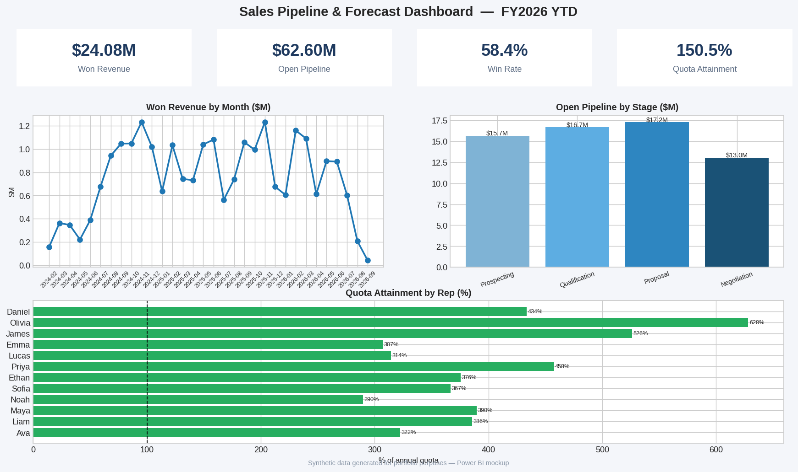

Power BI · DAX
Sales Pipeline & Forecast Dashboard
Pipeline by stage and rep, quota attainment, and forecast accuracy across 2,500 synthetic CRM opportunities. Star-schema model with 12 DAX measures and stage-weighted forecasting.
- Win rate 58%, TTM quota attainment 150%
- Weighted pipeline logic (10/25/50/75%)